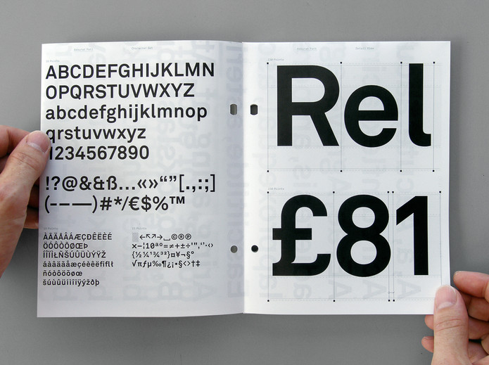
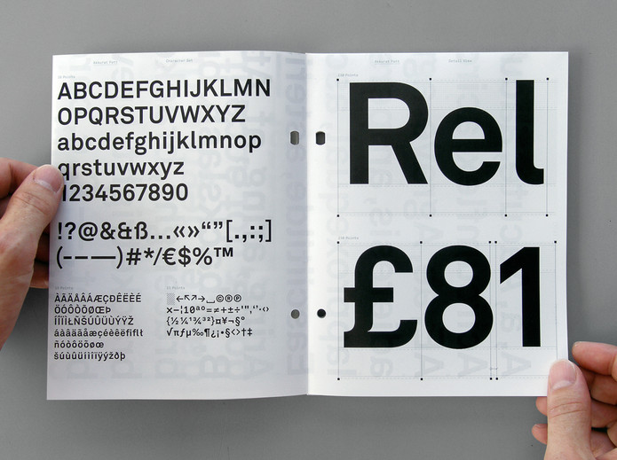
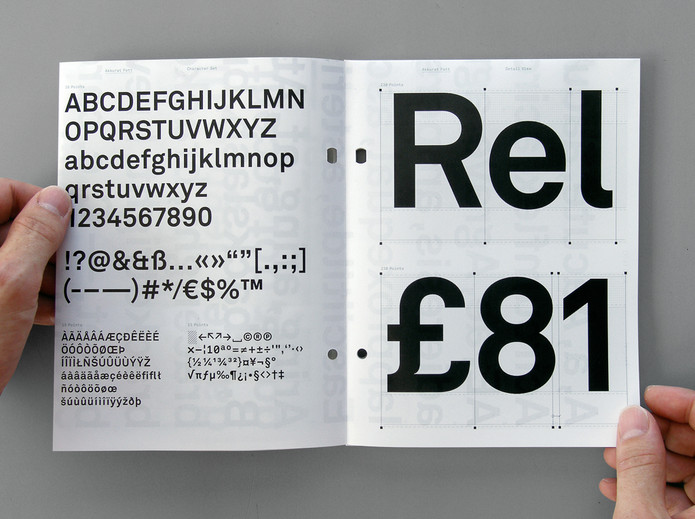
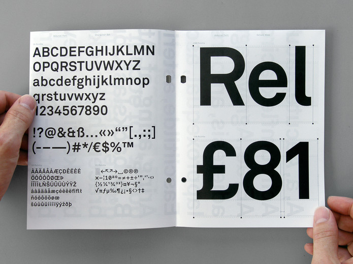

 



Designers use color, typography, images, symbols and systems to make the surfaces around us come alive with meaning. The revolutions in desktop computing and networked communication have raised public awareness of graphic design. Today, the field continues to shift as new technologies and social movements change the way we make and consume media.
Graphic Design: Now in Production explores some of the most vibrant graphic design work produced since 2000, including magazines, newspapers, books and posters; the expansion of branding programs for corporations, institutions and subcultures; the entrepreneurial spirit of designer—produced goods; the renaissance in digital typeface design; the storytelling potential of film and television titling sequences; and the transformation of raw data into compelling information narratives.
Graphic Design: Now in Production is co-organized by the Walker Art Center, Minneapolis, and the Smithsonian’s Cooper-Hewitt, National Design Museum, New York. The exhibition is co-curated by Andrew Blauvelt, Chief of Communications and Audience Engagement and Curator of Design, Walker Art Center, and Ellen Lupton, Senior Curator of Contemporary Design, Cooper-Hewitt, National Design Museum.